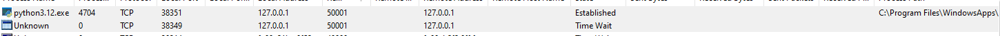
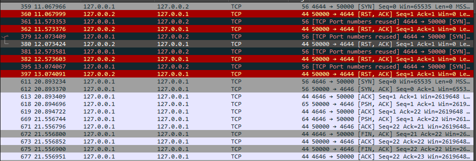
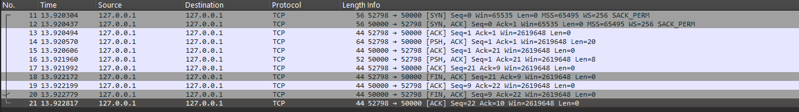
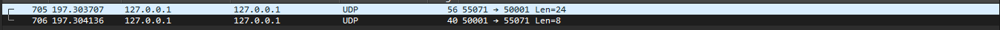
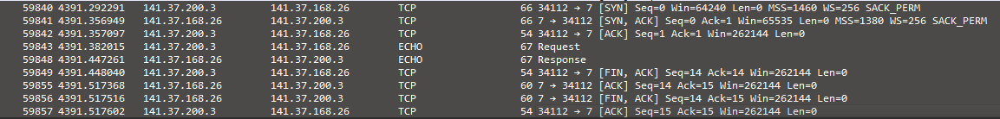

3. Socket Programmierung
2. Socket Programmierung¶
2.) Führen Sie dazu das Skript aus der Theorieaufgabe im Debug-Modus oder zeilenweise in der Windows-Kommandozeile zweimal mit den angegebenen Parametern aus und verfolgen Sie die Kommunikation mit WireShark sowie die geöffneten Ports mit CurrPorts¶
Currports: 
{kind=link}
Wireshark: 
{kind=link}
3. Socket Programmierung - Rechenserver¶
| Teil | Typ | Beschreibung |
|---|---|---|
| ID | Unsigned Int (4 Bytes) | Einzigartige Aufgaben-ID |
| Operation | UTF-8 kodiert (z. B. "SUM") | "SUM", "PRO", "MIN", "MAX" |
| N | Unsigned Char (1 Byte) | Anzahl der folgenden Zahlen |
| z1...zN | Signed Ints (4 Bytes je Zahl) | Die eigentlichen Zahlen |
| Der Server antwortet mit: |
| Teil | Typ | Beschreibung |
|---|---|---|
| ID | Unsigned Int (4 Bytes) | Die gleiche Aufgaben-ID |
| Ergebnis | Signed Int (4 Bytes) | Das Ergebnis der Berechnung |
| Format | Meaning | Bytes | Python Type |
|---|---|---|---|
| !I | Unsigned int (big-endian) | 4 | For ID |
| !i | Signed int (big-endian) | 4 | For each number |
| !B | Unsigned char (big-endian) | 1 | For N (number of values) |
| !Ii | Combination: Unsigned int + int | 8 | For server response: (ID, result) |
# rechenserver_tcp.py
import socket
import struct
import time
# Konfiguration
HOST = '127.0.0.1'
PORT = 50000
TIMEOUT = 5 # Sekunden
SERVER_ACTIVITY_PERIOD = 30 # Sekunden
def berechne(op, zahlen):
if op == "SUM":
return sum(zahlen)
elif op == "PRO":
result = 1
for z in zahlen:
result *= z
return result
elif op == "MIN":
return min(zahlen)
elif op == "MAX":
return max(zahlen)
else:
return 0
# Server starten
sock = socket.socket(socket.AF_INET, socket.SOCK_STREAM)
sock.bind((HOST, PORT))
sock.settimeout(TIMEOUT)
sock.listen(1)
print(f"[INFO] TCP Rechenserver läuft auf {HOST}:{PORT}")
conn = None
t_end = time.time() + SERVER_ACTIVITY_PERIOD
# Auf eingehende Verbindung warten
while time.time() < t_end:
try:
conn, addr = sock.accept()
print('[INFO] Verbindung akzeptiert von:', addr)
break
except socket.timeout:
print('[TIMEOUT] Warten auf Verbindung...')
# Wenn verbunden, Daten verarbeiten
if conn:
while time.time() < t_end:
try:
data = conn.recv(1024)
if not data:
print('[INFO] Verbindung wurde vom Client geschlossen.')
break
# Nachricht interpretieren
aufgabe_id = struct.unpack("!I", data[0:4])[0]
operation = data[4:7].decode("utf-8")
n = struct.unpack("!B", data[7:8])[0]
zahlen = []
for i in range(n):
start = 8 + i * 4
zahl = struct.unpack("!i", data[start:start+4])[0]
zahlen.append(zahl)
print(f"[EMPFANGEN] ID: {aufgabe_id}, OP: {operation}, Zahlen: {zahlen}")
result = berechne(operation, zahlen)
antwort = struct.pack("!Ii", aufgabe_id, result)
conn.sendall(antwort)
print(f"[GESENDET] Ergebnis: {result}")
except socket.timeout:
print('[TIMEOUT] Warten auf Daten...')
continue
conn.close()
sock.close()
print('[ENDE] Server beendet.')
# rechenclient_tcp.py
import socket
import struct
HOST = '127.0.0.1'
PORT = 50000
aufgabe_id = 1
operation = "SUM"
zahlen = [10, 20, 30]
# Nachricht vorbereiten
msg = struct.pack("!I", aufgabe_id)
msg += operation.encode("utf-8")
msg += struct.pack("!B", len(zahlen))
for z in zahlen:
msg += struct.pack("!i", z)
# Verbindung und Kommunikation
with socket.socket(socket.AF_INET, socket.SOCK_STREAM) as client:
client.connect((HOST, PORT))
client.sendall(msg)
antwort = client.recv(1024)
empfangene_id, ergebnis = struct.unpack("!Ii", antwort)
print(f"Antwort vom Server - ID: {empfangene_id}, Ergebnis: {ergebnis}")
# rechenserver_udp.py
import socket
import struct
HOST = '127.0.0.1'
PORT = 50001
def berechne(op, zahlen):
if op == "SUM":
return sum(zahlen)
elif op == "PRO":
result = 1
for z in zahlen:
result *= z
return result
elif op == "MIN":
return min(zahlen)
elif op == "MAX":
return max(zahlen)
else:
return 0
sock = socket.socket(socket.AF_INET, socket.SOCK_DGRAM)
sock.bind((HOST, PORT))
print(f"[INFO] UDP Rechenserver läuft auf {HOST}:{PORT}")
while True:
data, addr = sock.recvfrom(1024)
aufgabe_id = struct.unpack("!I", data[0:4])[0]
operation = data[4:7].decode("utf-8")
n = struct.unpack("!B", data[7:8])[0]
zahlen = [struct.unpack("!i", data[8+i*4:12+i*4])[0] for i in range(n)]
print(f"[EMPFANGEN] ID: {aufgabe_id}, OP: {operation}, Zahlen: {zahlen} von {addr}")
result = berechne(operation, zahlen)
antwort = struct.pack("!Ii", aufgabe_id, result)
sock.sendto(antwort, addr)
# rechenclient_udp.py
import socket
import struct
HOST = '127.0.0.1'
PORT = 50001
aufgabe_id = 2
operation = "MAX"
zahlen = [8, 22, -5, 13]
# Nachricht vorbereiten
msg = struct.pack("!I", aufgabe_id)
msg += operation.encode("utf-8")
msg += struct.pack("!B", len(zahlen))
for z in zahlen:
msg += struct.pack("!i", z)
with socket.socket(socket.AF_INET, socket.SOCK_DGRAM) as client:
client.sendto(msg, (HOST, PORT))
antwort, _ = client.recvfrom(1024)
empfangene_id, ergebnis = struct.unpack("!Ii", antwort)
print(f"Antwort vom Server - ID: {empfangene_id}, Ergebnis: {ergebnis}")
3.1 Verbinde auf Server mit Telnet¶
Ein Test mit Telnet zeigt, dass die Verbindung zum Server erfolgreich hergestellt wird.
Telnet sendet jedoch reine Textdaten, während der Server binär formatierte Daten struct.pack/unpack) erwartet.
Die Verarbeitung schlägt daher fehl. Der Server ist nicht für die Nutzung mit Telnet vorgesehen.
TCP Variante:¶
Wireshark: 
{kind=link}
Currports:
- Serverprozess lauscht auf Port 50000 (LISTENING)
- Verbindung während der Kommunikation: ESTABLISHED
UDP Variante:¶
Wireshark: 
{kind=link}
Currports:
- Serverprozess lauscht auf Port 50000 (LISTENING)
- Verbindung während der Kommunikation: ESTABLISHED
TCP-Variante
| Aktion | Codezeile (Client/Server) | Paket in Wireshark | Erklärung | |
|---|---|---|---|---|
| TCP-Verbindung wird aufgebaut | client.connect(...) |
SYN → SYN-ACK → ACK |
Verbindungsaufbau | |
| Client sendet Daten | client.sendall(msg) |
PSH, ACK mit Payload |
Anfrage wird übertragen | |
| Server antwortet | conn.sendall(antwort) |
PSH, ACK |
Antwort (ID + Ergebnis) | |
| Verbindung wird geschlossen | conn.close() |
FIN, ACK |
TCP-Teardown |
UDP-Variante
| Rolle | Funktion | Wireshark sichtbar als |
|---|---|---|
| Client | sendto(...) |
UDP-Paket an Server |
| Server | recvfrom(...) |
empfängt UDP-Paket |
| Server | sendto(...) |
Antwort zurück an Client |
| Client | recvfrom(...) |
empfängt Antwort |
3.2 Allgemeine Fragen¶
Frage 1:¶
Wie können Sie im Client Python-Skript die IP-Adresse und Port-Nummer des verwendeten lokalen Sockets bestimmen („bestimmen“ im Sinne von herausfinden)?
✅ Antwort:
Nach dem Verbindungsaufbau kannst du im Client schreiben:
print(client.getsockname()) # z. B. ('127.0.0.1', 54321)
Das gibt dir die lokale IP und Portnummer, die dein Betriebssystem dem Socket zugewiesen hat.
Frage 2:¶
Wann (in welcher Code-Zeile) und woher erhält ein Client seine IP-Adresse und Port-Nummer?
✅ Antwort:
Der Client bekommt die IP & Port automatisch vom Betriebssystem, sobald connect() aufgerufen wird, z. B.:
client.connect((HOST, PORT)) # → Hier wird automatisch ein lokaler Port zugewiesen
Frage 3:¶
Wie können Sie im Client-Skript die IP-Adresse und Port-Nummer des Sockets setzen?
✅ Antwort:
Statt dem System die Wahl zu überlassen, setzt du IP & Port vor dem connect() explizit mit bind():
client.bind(("127.0.0.1", 12345)) # Festgelegter lokaler Port client.connect(("127.0.0.1", 50000))
Frage 4:¶
Warum müssen Sie Timeouts verwenden und wie funktioniert try … except? Mit welchem Befehl können Sie einen gemeinsamen Timeout für alle Sockets setzen?
✅ Antwort:
- Warum: Damit der Code nicht ewig blockiert, wenn z. B. kein Server antwortet
- recv(), accept() usw. sind sonst blockierende Aufrufe
- try ... except fängt z. B. socket.timeout-Fehler ab:
✅ Globaler Timeout für alle Sockets:
import socket socket.setde[]()faulttimeout(5)
Frage 5:¶
Finden Sie experimentell heraus, ob Sie einen Server betreiben können, der ECHO-Anfragen auf dem gleichen Port für UDP und TCP beantwortet?
✅ Antwort:
Ja, Wichtig ist dabei, dass du zwei getrennte Sockets mit SOCK_STREAM (TCP) und SOCK_DGRAM (UDP) erstellst. Das OS unterscheidet bei den Protokollen bei Anfragen
3.3 Multithreaded Connections¶
# rechenserver_tcp_multiclient_timeout.py
import socket
import struct
import threading
import time
HOST = '127.0.0.1'
PORT = 50000
STOP_FLAG = False
MAX_LAUFZEIT = 30 # Sekunden
SOCKET_TIMEOUT = 2 # Sekunden für akzeptieren und recv()
def berechne(op, zahlen):
if op == "SUM":
return sum(zahlen)
elif op == "PRO":
result = 1
for z in zahlen:
result *= z
return result
elif op == "MIN":
return min(zahlen)
elif op == "MAX":
return max(zahlen)
else:
return 0
def receive(conn, addr):
conn.settimeout(SOCKET_TIMEOUT)
print(f"[VERBINDUNG] Client {addr} verbunden.")
try:
while not STOP_FLAG:
try:
data = conn.recv(1024)
if not data:
print(f"[TRENNUNG] Client {addr} hat die Verbindung geschlossen.")
break
aufgabe_id = struct.unpack("!I", data[0:4])[0]
operation = data[4:7].decode("utf-8")
n = struct.unpack("!B", data[7:8])[0]
zahlen = [struct.unpack("!i", data[8+i*4:12+i*4])[0] for i in range(n)]
print(f"[EMPFANGEN] ID: {aufgabe_id}, OP: {operation}, Zahlen: {zahlen}")
result = berechne(operation, zahlen)
antwort = struct.pack("!Ii", aufgabe_id, result)
conn.sendall(antwort)
print(f"[GESENDET] Ergebnis an {addr}: {result}")
except socket.timeout:
continue
finally:
conn.close()
def listen(sock):
sock.settimeout(SOCKET_TIMEOUT)
print(f"[LAUSCHT] TCP Rechenserver auf {HOST}:{PORT}")
while not STOP_FLAG:
try:
conn, addr = sock.accept()
threading.Thread(target=receive, args=(conn, addr), daemon=True).start()
except socket.timeout:
continue
except Exception as e:
print("[FEHLER] Beim accept:", e)
break
# Hauptprogramm
sock = socket.socket(socket.AF_INET, socket.SOCK_STREAM)
sock.bind((HOST, PORT))
sock.listen()
start_time = time.time()
server_thread = threading.Thread(target=listen, args=(sock,))
server_thread.start()
try:
while time.time() - start_time < MAX_LAUFZEIT:
time.sleep(1)
finally:
STOP_FLAG = True
sock.close()
print("[ENDE] Server wird beendet.")
# multi_client_test.py
import socket
import struct
import threading
import random
import time
HOST = '127.0.0.1'
PORT = 50000
NUM_CLIENTS = 10 # Anzahl gleichzeitiger Clients
def client_task(client_id):
aufgabe_id = client_id
operation = random.choice(["SUM", "PRO", "MIN", "MAX"])
zahlen = [random.randint(1, 100) for _ in range(random.randint(3, 6))]
msg = struct.pack("!I", aufgabe_id)
msg += operation.encode("utf-8")
msg += struct.pack("!B", len(zahlen))
for z in zahlen:
msg += struct.pack("!i", z)
try:
with socket.socket(socket.AF_INET, socket.SOCK_STREAM) as s:
s.connect((HOST, PORT))
print(f"[Client {client_id}] → OP: {operation}, Zahlen: {zahlen}")
s.sendall(msg)
antwort = s.recv(1024)
empfangene_id, ergebnis = struct.unpack("!Ii", antwort)
print(f"[Client {client_id}] ← Ergebnis: {ergebnis}")
except Exception as e:
print(f"[Client {client_id}] Fehler: {e}")
# Alle Clients starten
threads = []
for i in range(NUM_CLIENTS):
t = threading.Thread(target=client_task, args=(i,))
t.start()
threads.append(t)
# Warten bis alle fertig
for t in threads:
t.join()
print("[FERTIG] Alle Clients abgeschlossen.")
4. Portscanner¶
# tcp_portscanner.py
import socket
import threading
import time
TARGET_HOST = '141.37.168.26' # Zielserver im VPN
PORT_RANGE = range(1, 51) # Ports 1-50
TIMEOUT = 1 # Socket-Timeout in Sekunden
MAX_SCAN_TIME = 10 # Max. Scan-Zeit in Sekunden
Continue = True # Globales Abbruch-Flag
offene_ports = [] # Ergebnisliste
threads = []
def scan_port(port):
global Continue
if not Continue:
return
try:
with socket.socket(socket.AF_INET, socket.SOCK_STREAM) as s:
s.settimeout(TIMEOUT)
result = s.connect_ex((TARGET_HOST, port))
if result == 0:
print(f"[OFFEN] TCP-Port {port}")
offene_ports.append(port)
except:
pass # Fehler ignorieren
def start_scanning():
for port in PORT_RANGE:
if not Continue:
break
t = threading.Thread(target=scan_port, args=(port,))
t.start()
threads.append(t)
# Hauptprogramm
start_time = time.time()
print(f"[INFO] Starte TCP-Portscan auf {TARGET_HOST}...")
try:
start_scanning()
while time.time() - start_time < MAX_SCAN_TIME:
if all(not t.is_alive() for t in threads):
break
time.sleep(0.2)
except KeyboardInterrupt:
print("\n[ABBRUCH] Benutzer hat Scan mit Strg+C gestoppt.")
Continue = False
# Threads beenden
for t in threads:
t.join()
# Ergebnis
print("\n[FERTIG] Offene TCP-Ports:", offene_ports)
🧾 TCP Dump anzeigen
67 16.341847 141.37.200.3 141.37.168.26 TCP 66 32649 → 3 [SYN] Seq=0 Win=64240 Len=0 MSS=1460 WS=256 SACK_PERM
68 16.341870 141.37.200.3 141.37.168.26 TCP 66 32650 → 2 [SYN] Seq=0 Win=64240 Len=0 MSS=1460 WS=256 SACK_PERM
69 16.341873 141.37.200.3 141.37.168.26 TCP 66 32651 → 1 [SYN] Seq=0 Win=64240 Len=0 MSS=1460 WS=256 SACK_PERM
70 16.341896 141.37.200.3 141.37.168.26 TCP 66 32652 → 4 [SYN] Seq=0 Win=64240 Len=0 MSS=1460 WS=256 SACK_PERM
71 16.342203 141.37.200.3 141.37.168.26 TCP 66 32653 → 5 [SYN] Seq=0 Win=64240 Len=0 MSS=1460 WS=256 SACK_PERM
72 16.342440 141.37.200.3 141.37.168.26 TCP 66 32654 → 6 [SYN] Seq=0 Win=64240 Len=0 MSS=1460 WS=256 SACK_PERM
73 16.342690 141.37.200.3 141.37.168.26 TCP 66 32655 → 7 [SYN] Seq=0 Win=64240 Len=0 MSS=1460 WS=256 SACK_PERM
74 16.342950 141.37.200.3 141.37.168.26 TCP 66 32656 → 8 [SYN] Seq=0 Win=64240 Len=0 MSS=1460 WS=256 SACK_PERM
75 16.343226 141.37.200.3 141.37.168.26 TCP 66 32657 → 9 [SYN] Seq=0 Win=64240 Len=0 MSS=1460 WS=256 SACK_PERM
76 16.343472 141.37.200.3 141.37.168.26 TCP 66 32658 → 10 [SYN] Seq=0 Win=64240 Len=0 MSS=1460 WS=256 SACK_PERM
77 16.343743 141.37.200.3 141.37.168.26 TCP 66 32659 → 11 [SYN] Seq=0 Win=64240 Len=0 MSS=1460 WS=256 SACK_PERM
78 16.344034 141.37.200.3 141.37.168.26 TCP 66 32660 → 12 [SYN] Seq=0 Win=64240 Len=0 MSS=1460 WS=256 SACK_PERM
79 16.344270 141.37.200.3 141.37.168.26 TCP 66 32661 → 13 [SYN] Seq=0 Win=64240 Len=0 MSS=1460 WS=256 SACK_PERM
80 16.344513 141.37.200.3 141.37.168.26 TCP 66 32662 → 14 [SYN] Seq=0 Win=64240 Len=0 MSS=1460 WS=256 SACK_PERM
81 16.344807 141.37.200.3 141.37.168.26 TCP 66 32663 → 15 [SYN] Seq=0 Win=64240 Len=0 MSS=1460 WS=256 SACK_PERM
82 16.345065 141.37.200.3 141.37.168.26 TCP 66 32664 → 16 [SYN] Seq=0 Win=64240 Len=0 MSS=1460 WS=256 SACK_PERM
83 16.345344 141.37.200.3 141.37.168.26 TCP 66 32665 → 17 [SYN] Seq=0 Win=64240 Len=0 MSS=1460 WS=256 SACK_PERM
84 16.345680 141.37.200.3 141.37.168.26 TCP 66 32666 → 18 [SYN] Seq=0 Win=64240 Len=0 MSS=1460 WS=256 SACK_PERM
85 16.346116 141.37.200.3 141.37.168.26 TCP 66 32667 → 19 [SYN] Seq=0 Win=64240 Len=0 MSS=1460 WS=256 SACK_PERM
86 16.346450 141.37.200.3 141.37.168.26 TCP 66 32668 → 20 [SYN] Seq=0 Win=64240 Len=0 MSS=1460 WS=256 SACK_PERM
87 16.346793 141.37.200.3 141.37.168.26 TCP 66 32669 → 21 [SYN] Seq=0 Win=64240 Len=0 MSS=1460 WS=256 SACK_PERM
88 16.347195 141.37.200.3 141.37.168.26 TCP 66 32670 → 22 [SYN] Seq=0 Win=64240 Len=0 MSS=1460 WS=256 SACK_PERM
89 16.347484 141.37.200.3 141.37.168.26 TCP 66 32671 → 23 [SYN] Seq=0 Win=64240 Len=0 MSS=1460 WS=256 SACK_PERM
90 16.347781 141.37.200.3 141.37.168.26 TCP 66 32672 → 24 [SYN] Seq=0 Win=64240 Len=0 MSS=1460 WS=256 SACK_PERM
91 16.348320 141.37.200.3 141.37.168.26 TCP 66 32674 → 26 [SYN] Seq=0 Win=64240 Len=0 MSS=1460 WS=256 SACK_PERM
92 16.348605 141.37.200.3 141.37.168.26 TCP 66 32675 → 27 [SYN] Seq=0 Win=64240 Len=0 MSS=1460 WS=256 SACK_PERM
93 16.348863 141.37.200.3 141.37.168.26 TCP 66 32676 → 28 [SYN] Seq=0 Win=64240 Len=0 MSS=1460 WS=256 SACK_PERM
94 16.349075 141.37.200.3 141.37.168.26 TCP 66 32677 → 29 [SYN] Seq=0 Win=64240 Len=0 MSS=1460 WS=256 SACK_PERM
95 16.349597 141.37.200.3 141.37.168.26 TCP 66 32678 → 30 [SYN] Seq=0 Win=64240 Len=0 MSS=1460 WS=256 SACK_PERM
96 16.349850 141.37.200.3 141.37.168.26 TCP 66 32679 → 31 [SYN] Seq=0 Win=64240 Len=0 MSS=1460 WS=256 SACK_PERM
97 16.350108 141.37.200.3 141.37.168.26 TCP 66 32680 → 32 [SYN] Seq=0 Win=64240 Len=0 MSS=1460 WS=256 SACK_PERM
98 16.350153 141.37.200.3 141.37.168.26 TCP 66 32681 → 25 [SYN] Seq=0 Win=64240 Len=0 MSS=1460 WS=4 SACK_PERM
99 16.350341 141.37.200.3 141.37.168.26 TCP 66 32682 → 33 [SYN] Seq=0 Win=64240 Len=0 MSS=1460 WS=256 SACK_PERM
100 16.350632 141.37.200.3 141.37.168.26 TCP 66 32683 → 34 [SYN] Seq=0 Win=64240 Len=0 MSS=1460 WS=256 SACK_PERM
101 16.350877 141.37.200.3 141.37.168.26 TCP 66 32684 → 35 [SYN] Seq=0 Win=64240 Len=0 MSS=1460 WS=256 SACK_PERM
102 16.351122 141.37.200.3 141.37.168.26 TCP 66 32685 → 36 [SYN] Seq=0 Win=64240 Len=0 MSS=1460 WS=256 SACK_PERM
103 16.351362 141.37.200.3 141.37.168.26 TCP 66 32686 → 37 [SYN] Seq=0 Win=64240 Len=0 MSS=1460 WS=256 SACK_PERM
104 16.351630 141.37.200.3 141.37.168.26 TCP 66 32687 → 38 [SYN] Seq=0 Win=64240 Len=0 MSS=1460 WS=256 SACK_PERM
105 16.351893 141.37.200.3 141.37.168.26 TCP 66 32688 → 39 [SYN] Seq=0 Win=64240 Len=0 MSS=1460 WS=256 SACK_PERM
106 16.352145 141.37.200.3 141.37.168.26 TCP 66 32689 → 40 [SYN] Seq=0 Win=64240 Len=0 MSS=1460 WS=256 SACK_PERM
107 16.352343 141.37.200.3 141.37.168.26 TCP 66 32690 → 41 [SYN] Seq=0 Win=64240 Len=0 MSS=1460 WS=256 SACK_PERM
108 16.352517 141.37.200.3 141.37.168.26 TCP 66 32691 → 42 [SYN] Seq=0 Win=64240 Len=0 MSS=1460 WS=256 SACK_PERM
109 16.352709 141.37.200.3 141.37.168.26 TCP 66 32692 → 43 [SYN] Seq=0 Win=64240 Len=0 MSS=1460 WS=256 SACK_PERM
110 16.352874 141.37.200.3 141.37.168.26 TCP 66 32693 → 44 [SYN] Seq=0 Win=64240 Len=0 MSS=1460 WS=256 SACK_PERM
111 16.353086 141.37.200.3 141.37.168.26 TCP 66 32694 → 45 [SYN] Seq=0 Win=64240 Len=0 MSS=1460 WS=256 SACK_PERM
112 16.353225 141.37.200.3 141.37.168.26 TCP 66 32695 → 46 [SYN] Seq=0 Win=64240 Len=0 MSS=1460 WS=256 SACK_PERM
113 16.353404 141.37.200.3 141.37.168.26 TCP 66 32696 → 47 [SYN] Seq=0 Win=64240 Len=0 MSS=1460 WS=256 SACK_PERM
114 16.353539 141.37.200.3 141.37.168.26 TCP 66 32697 → 48 [SYN] Seq=0 Win=64240 Len=0 MSS=1460 WS=256 SACK_PERM
115 16.353722 141.37.200.3 141.37.168.26 TCP 66 32698 → 49 [SYN] Seq=0 Win=64240 Len=0 MSS=1460 WS=256 SACK_PERM
116 16.353845 141.37.200.3 141.37.168.26 TCP 66 32699 → 50 [SYN] Seq=0 Win=64240 Len=0 MSS=1460 WS=256 SACK_PERM
117 16.379216 141.37.168.26 141.37.200.3 TCP 60 3 → 32649 [RST, ACK] Seq=1 Ack=1 Win=0 Len=0
118 16.379374 141.37.168.26 141.37.200.3 TCP 60 1 → 32651 [RST, ACK] Seq=1 Ack=1 Win=0 Len=0
119 16.379507 141.37.168.26 141.37.200.3 TCP 60 2 → 32650 [RST, ACK] Seq=1 Ack=1 Win=0 Len=0
120 16.379608 141.37.168.26 141.37.200.3 TCP 60 4 → 32652 [RST, ACK] Seq=1 Ack=1 Win=0 Len=0
121 16.379696 141.37.168.26 141.37.200.3 TCP 60 5 → 32653 [RST, ACK] Seq=1 Ack=1 Win=0 Len=0
122 16.379786 141.37.168.26 141.37.200.3 TCP 60 6 → 32654 [RST, ACK] Seq=1 Ack=1 Win=0 Len=0
123 16.379854 141.37.168.26 141.37.200.3 TCP 66 7 → 32655 [SYN, ACK] Seq=0 Ack=1 Win=65535 Len=0 MSS=1380 WS=256 SACK_PERM
124 16.380058 141.37.200.3 141.37.168.26 TCP 54 32655 → 7 [ACK] Seq=1 Ack=1 Win=262144 Len=0
125 16.380173 141.37.168.26 141.37.200.3 TCP 66 9 → 32657 [SYN, ACK] Seq=0 Ack=1 Win=65535 Len=0 MSS=1380 WS=256 SACK_PERM
126 16.380243 141.37.200.3 141.37.168.26 TCP 54 32655 → 7 [FIN, ACK] Seq=1 Ack=1 Win=262144 Len=0
127 16.380317 141.37.200.3 141.37.168.26 TCP 54 32657 → 9 [ACK] Seq=1 Ack=1 Win=262144 Len=0
128 16.380358 141.37.168.26 141.37.200.3 TCP 60 8 → 32656 [RST, ACK] Seq=1 Ack=1 Win=0 Len=0
129 16.380510 141.37.168.26 141.37.200.3 TCP 60 10 → 32658 [RST, ACK] Seq=1 Ack=1 Win=0 Len=0
130 16.380933 141.37.168.26 141.37.200.3 TCP 60 12 → 32660 [RST, ACK] Seq=1 Ack=1 Win=0 Len=0
131 16.381032 141.37.168.26 141.37.200.3 TCP 60 11 → 32659 [RST, ACK] Seq=1 Ack=1 Win=0 Len=0
132 16.381156 141.37.168.26 141.37.200.3 TCP 66 13 → 32661 [SYN, ACK] Seq=0 Ack=1 Win=65535 Len=0 MSS=1380 WS=256 SACK_PERM
133 16.381181 141.37.200.3 141.37.168.26 TCP 54 32657 → 9 [FIN, ACK] Seq=1 Ack=1 Win=262144 Len=0
134 16.381282 141.37.200.3 141.37.168.26 TCP 54 32661 → 13 [ACK] Seq=1 Ack=1 Win=262144 Len=0
135 16.381329 141.37.168.26 141.37.200.3 TCP 60 14 → 32662 [RST, ACK] Seq=1 Ack=1 Win=0 Len=0
136 16.381617 141.37.200.3 141.37.168.26 TCP 54 32661 → 13 [FIN, ACK] Seq=1 Ack=1 Win=262144 Len=0
137 16.381618 141.37.168.26 141.37.200.3 TCP 60 15 → 32663 [RST, ACK] Seq=1 Ack=1 Win=0 Len=0
138 16.382041 141.37.168.26 141.37.200.3 TCP 60 16 → 32664 [RST, ACK] Seq=1 Ack=1 Win=0 Len=0
139 16.382234 141.37.168.26 141.37.200.3 TCP 66 17 → 32665 [SYN, ACK] Seq=0 Ack=1 Win=65535 Len=0 MSS=1380 WS=256 SACK_PERM
140 16.382436 141.37.200.3 141.37.168.26 TCP 54 32665 → 17 [ACK] Seq=1 Ack=1 Win=262144 Len=0
141 16.382466 141.37.168.26 141.37.200.3 TCP 60 18 → 32666 [RST, ACK] Seq=1 Ack=1 Win=0 Len=0
142 16.383407 141.37.168.26 141.37.200.3 TCP 66 19 → 32667 [SYN, ACK] Seq=0 Ack=1 Win=65535 Len=0 MSS=1380 WS=256 SACK_PERM
143 16.383550 141.37.200.3 141.37.168.26 TCP 54 32667 → 19 [ACK] Seq=1 Ack=1 Win=262144 Len=0
144 16.383618 141.37.168.26 141.37.200.3 TCP 60 20 → 32668 [RST, ACK] Seq=1 Ack=1 Win=0 Len=0
145 16.384310 141.37.168.26 141.37.200.3 TCP 60 21 → 32669 [RST, ACK] Seq=1 Ack=1 Win=0 Len=0
146 16.384780 141.37.168.26 141.37.200.3 TCP 60 22 → 32670 [RST, ACK] Seq=1 Ack=1 Win=0 Len=0
147 16.384850 141.37.168.26 141.37.200.3 TCP 60 23 → 32671 [RST, ACK] Seq=1 Ack=1 Win=0 Len=0
148 16.384949 141.37.168.26 141.37.200.3 TCP 60 24 → 32672 [RST, ACK] Seq=1 Ack=1 Win=0 Len=0
149 16.385019 141.37.168.26 141.37.200.3 TCP 60 26 → 32674 [RST, ACK] Seq=1 Ack=1 Win=0 Len=0
150 16.385205 141.37.168.26 141.37.200.3 TCP 60 27 → 32675 [RST, ACK] Seq=1 Ack=1 Win=0 Len=0
151 16.385274 141.37.168.26 141.37.200.3 TCP 60 28 → 32676 [RST, ACK] Seq=1 Ack=1 Win=0 Len=0
152 16.385936 141.37.168.26 141.37.200.3 TCP 60 29 → 32677 [RST, ACK] Seq=1 Ack=1 Win=0 Len=0
153 16.386376 141.37.168.26 141.37.200.3 TCP 60 30 → 32678 [RST, ACK] Seq=1 Ack=1 Win=0 Len=0
154 16.386555 141.37.168.26 141.37.200.3 TCP 60 31 → 32679 [RST, ACK] Seq=1 Ack=1 Win=0 Len=0
155 16.386800 141.37.168.26 141.37.200.3 TCP 60 25 → 32681 [RST, ACK] Seq=1 Ack=1 Win=0 Len=0
156 16.387036 141.37.168.26 141.37.200.3 TCP 60 32 → 32680 [RST, ACK] Seq=1 Ack=1 Win=0 Len=0
157 16.387119 141.37.168.26 141.37.200.3 TCP 60 33 → 32682 [RST, ACK] Seq=1 Ack=1 Win=0 Len=0
158 16.387229 141.37.168.26 141.37.200.3 TCP 60 34 → 32683 [RST, ACK] Seq=1 Ack=1 Win=0 Len=0
159 16.387735 141.37.168.26 141.37.200.3 TCP 60 36 → 32685 [RST, ACK] Seq=1 Ack=1 Win=0 Len=0
160 16.387815 141.37.168.26 141.37.200.3 TCP 60 35 → 32684 [RST, ACK] Seq=1 Ack=1 Win=0 Len=0
161 16.388161 141.37.168.26 141.37.200.3 TCP 60 37 → 32686 [RST, ACK] Seq=1 Ack=1 Win=0 Len=0
162 16.388397 141.37.168.26 141.37.200.3 TCP 60 38 → 32687 [RST, ACK] Seq=1 Ack=1 Win=0 Len=0
163 16.388858 141.37.168.26 141.37.200.3 TCP 60 40 → 32689 [RST, ACK] Seq=1 Ack=1 Win=0 Len=0
164 16.389076 141.37.168.26 141.37.200.3 TCP 60 39 → 32688 [RST, ACK] Seq=1 Ack=1 Win=0 Len=0
165 16.389305 141.37.168.26 141.37.200.3 TCP 60 42 → 32691 [RST, ACK] Seq=1 Ack=1 Win=0 Len=0
166 16.389385 141.37.168.26 141.37.200.3 TCP 60 41 → 32690 [RST, ACK] Seq=1 Ack=1 Win=0 Len=0
167 16.389532 141.37.168.26 141.37.200.3 TCP 60 44 → 32693 [RST, ACK] Seq=1 Ack=1 Win=0 Len=0
168 16.389612 141.37.168.26 141.37.200.3 TCP 60 43 → 32692 [RST, ACK] Seq=1 Ack=1 Win=0 Len=0
169 16.389758 141.37.168.26 141.37.200.3 TCP 60 46 → 32695 [RST, ACK] Seq=1 Ack=1 Win=0 Len=0
170 16.389839 141.37.168.26 141.37.200.3 TCP 60 45 → 32694 [RST, ACK] Seq=1 Ack=1 Win=0 Len=0
171 16.389980 141.37.168.26 141.37.200.3 TCP 60 48 → 32697 [RST, ACK] Seq=1 Ack=1 Win=0 Len=0
172 16.390693 141.37.168.26 141.37.200.3 TCP 60 49 → 32698 [RST, ACK] Seq=1 Ack=1 Win=0 Len=0
173 16.390775 141.37.168.26 141.37.200.3 TCP 60 47 → 32696 [RST, ACK] Seq=1 Ack=1 Win=0 Len=0
174 16.390894 141.37.168.26 141.37.200.3 TCP 60 50 → 32699 [RST, ACK] Seq=1 Ack=1 Win=0 Len=0
175 16.404198 141.37.200.3 141.37.168.26 TCP 54 32665 → 17 [FIN, ACK] Seq=1 Ack=1 Win=262144 Len=0
176 16.404677 141.37.200.3 141.37.168.26 TCP 54 32667 → 19 [FIN, ACK] Seq=1 Ack=1 Win=262144 Len=0
177 16.416911 141.37.168.26 141.37.200.3 TCP 60 7 → 32655 [ACK] Seq=1 Ack=2 Win=262144 Len=0
178 16.416969 141.37.168.26 141.37.200.3 TCP 60 7 → 32655 [FIN, ACK] Seq=1 Ack=2 Win=262144 Len=0
179 16.417018 141.37.200.3 141.37.168.26 TCP 54 32655 → 7 [ACK] Seq=2 Ack=2 Win=262144 Len=0
180 16.417356 141.37.168.26 141.37.200.3 TCP 60 9 → 32657 [ACK] Seq=1 Ack=2 Win=262144 Len=0
181 16.417400 141.37.168.26 141.37.200.3 TCP 60 9 → 32657 [FIN, ACK] Seq=1 Ack=2 Win=262144 Len=0
182 16.417441 141.37.200.3 141.37.168.26 TCP 54 32657 → 9 [ACK] Seq=2 Ack=2 Win=262144 Len=0
183 16.417601 141.37.168.26 141.37.200.3 DAYTIME 75 DAYTIME Response
184 16.417654 141.37.200.3 141.37.168.26 TCP 54 32661 → 13 [RST, ACK] Seq=2 Ack=22 Win=0 Len=0
185 16.417826 141.37.168.26 141.37.200.3 TCP 60 13 → 32661 [FIN, ACK] Seq=22 Ack=1 Win=262144 Len=0
186 16.417855 141.37.200.3 141.37.168.26 TCP 54 32661 → 13 [RST] Seq=1 Win=0 Len=0
187 16.418016 141.37.168.26 141.37.200.3 TCP 60 13 → 32661 [ACK] Seq=23 Ack=2 Win=262144 Len=0
188 16.418037 141.37.200.3 141.37.168.26 TCP 54 32661 → 13 [RST] Seq=2 Win=0 Len=0
189 16.419631 141.37.168.26 141.37.200.3 TCP 216 17 → 32665 [PSH, ACK] Seq=1 Ack=1 Win=262144 Len=162
190 16.419683 141.37.200.3 141.37.168.26 TCP 54 32665 → 17 [RST, ACK] Seq=2 Ack=163 Win=0 Len=0
191 16.419823 141.37.168.26 141.37.200.3 TCP 60 17 → 32665 [FIN, ACK] Seq=163 Ack=1 Win=262144 Len=0
192 16.419848 141.37.200.3 141.37.168.26 TCP 54 32665 → 17 [RST] Seq=1 Win=0 Len=0
193 16.420559 141.37.168.26 141.37.200.3 Chargen 1434 Chargen
194 16.420612 141.37.200.3 141.37.168.26 TCP 54 32667 → 19 [RST, ACK] Seq=2 Ack=1381 Win=0 Len=0
195 16.420758 141.37.168.26 141.37.200.3 Chargen 1434 Chargen
196 16.420809 141.37.200.3 141.37.168.26 TCP 54 32667 → 19 [RST] Seq=1 Win=0 Len=0
197 16.421233 141.37.168.26 141.37.200.3 TCP 1434 [TCP Spurious Retransmission] 19 → 32667 [ACK] Seq=2761 Ack=1 Win=262144 Len=1380
198 16.421268 141.37.200.3 141.37.168.26 TCP 54 32667 → 19 [RST] Seq=1 Win=0 Len=0
199 16.421488 141.37.168.26 141.37.200.3 Chargen 1434 [TCP Spurious Retransmission] Chargen
200 16.421531 141.37.200.3 141.37.168.26 TCP 54 32667 → 19 [RST] Seq=1 Win=0 Len=0
201 16.421676 141.37.168.26 141.37.200.3 TCP 1434 [TCP Spurious Retransmission] 19 → 32667 [ACK] Seq=5521 Ack=1 Win=262144 Len=1380
202 16.421699 141.37.200.3 141.37.168.26 TCP 54 32667 → 19 [RST] Seq=1 Win=0 Len=0
203 16.421728 141.37.168.26 141.37.200.3 Chargen 110 [TCP Spurious Retransmission] Chargen
204 16.421765 141.37.200.3 141.37.168.26 TCP 54 32667 → 19 [RST] Seq=1 Win=0 Len=0
205 16.421861 141.37.168.26 141.37.200.3 TCP 1434 [TCP Spurious Retransmission] 19 → 32667 [ACK] Seq=6957 Ack=1 Win=262144 Len=1380
206 16.421890 141.37.200.3 141.37.168.26 TCP 54 32667 → 19 [RST] Seq=1 Win=0 Len=0
207 16.422118 141.37.168.26 141.37.200.3 Chargen 1434 [TCP Spurious Retransmission] Chargen
208 16.422141 141.37.200.3 141.37.168.26 TCP 54 32667 → 19 [RST] Seq=1 Win=0 Len=0
209 16.422330 141.37.168.26 141.37.200.3 TCP 1434 [TCP Spurious Retransmission] 19 → 32667 [ACK] Seq=9717 Ack=1 Win=262144 Len=1380
210 16.422353 141.37.200.3 141.37.168.26 TCP 54 32667 → 19 [RST] Seq=1 Win=0 Len=0
211 16.422382 141.37.168.26 141.37.200.3 Chargen 1434 [TCP Spurious Retransmission] Chargen
212 16.422402 141.37.200.3 141.37.168.26 TCP 54 32667 → 19 [RST] Seq=1 Win=0 Len=0
213 16.440389 141.37.168.26 141.37.200.3 TCP 60 17 → 32665 [ACK] Seq=164 Ack=2 Win=262144 Len=0
214 16.440427 141.37.200.3 141.37.168.26 TCP 54 32665 → 17 [RST] Seq=2 Win=0 Len=0
215 16.440792 141.37.168.26 141.37.200.3 TCP 60 19 → 32667 [ACK] Seq=12477 Ack=2 Win=262144 Len=0
216 16.440817 141.37.200.3 141.37.168.26 TCP 54 32667 → 19 [RST] Seq=2 Win=0 Len=0
217 16.886811 141.37.200.3 141.37.168.26 TCP 66 [TCP Port numbers reused] 32664 → 16 [SYN] Seq=0 Win=64240 Len=0 MSS=1460 WS=256 SACK_PERM
218 16.886811 141.37.200.3 141.37.168.26 TCP 66 [TCP Port numbers reused] 32672 → 24 [SYN] Seq=0 Win=64240 Len=0 MSS=1460 WS=256 SACK_PERM
219 16.886811 141.37.200.3 141.37.168.26 TCP 66 [TCP Port numbers reused] 32656 → 8 [SYN] Seq=0 Win=64240 Len=0 MSS=1460 WS=256 SACK_PERM
220 16.886811 141.37.200.3 141.37.168.26 TCP 66 [TCP Port numbers reused] 32649 → 3 [SYN] Seq=0 Win=64240 Len=0 MSS=1460 WS=256 SACK_PERM
221 16.886875 141.37.200.3 141.37.168.26 TCP 66 [TCP Port numbers reused] 32658 → 10 [SYN] Seq=0 Win=64240 Len=0 MSS=1460 WS=256 SACK_PERM
222 16.886875 141.37.200.3 141.37.168.26 TCP 66 [TCP Port numbers reused] 32666 → 18 [SYN] Seq=0 Win=64240 Len=0 MSS=1460 WS=256 SACK_PERM
223 16.886879 141.37.200.3 141.37.168.26 TCP 66 [TCP Port numbers reused] 32651 → 1 [SYN] Seq=0 Win=64240 Len=0 MSS=1460 WS=256 SACK_PERM
224 16.886884 141.37.200.3 141.37.168.26 TCP 66 [TCP Port numbers reused] 32674 → 26 [SYN] Seq=0 Win=64240 Len=0 MSS=1460 WS=256 SACK_PERM
225 16.886918 141.37.200.3 141.37.168.26 TCP 66 [TCP Port numbers reused] 32660 → 12 [SYN] Seq=0 Win=64240 Len=0 MSS=1460 WS=256 SACK_PERM
226 16.886918 141.37.200.3 141.37.168.26 TCP 66 [TCP Port numbers reused] 32650 → 2 [SYN] Seq=0 Win=64240 Len=0 MSS=1460 WS=256 SACK_PERM
227 16.886918 141.37.200.3 141.37.168.26 TCP 66 [TCP Port numbers reused] 32668 → 20 [SYN] Seq=0 Win=64240 Len=0 MSS=1460 WS=256 SACK_PERM
228 16.886957 141.37.200.3 141.37.168.26 TCP 66 [TCP Port numbers reused] 32675 → 27 [SYN] Seq=0 Win=64240 Len=0 MSS=1460 WS=256 SACK_PERM
229 16.886966 141.37.200.3 141.37.168.26 TCP 66 [TCP Port numbers reused] 32652 → 4 [SYN] Seq=0 Win=64240 Len=0 MSS=1460 WS=256 SACK_PERM
230 16.886976 141.37.200.3 141.37.168.26 TCP 66 [TCP Port numbers reused] 32659 → 11 [SYN] Seq=0 Win=64240 Len=0 MSS=1460 WS=256 SACK_PERM
231 16.886976 141.37.200.3 141.37.168.26 TCP 66 [TCP Port numbers reused] 32669 → 21 [SYN] Seq=0 Win=64240 Len=0 MSS=1460 WS=256 SACK_PERM
232 16.887012 141.37.200.3 141.37.168.26 TCP 66 [TCP Port numbers reused] 32653 → 5 [SYN] Seq=0 Win=64240 Len=0 MSS=1460 WS=256 SACK_PERM
233 16.887034 141.37.200.3 141.37.168.26 TCP 66 [TCP Port numbers reused] 32662 → 14 [SYN] Seq=0 Win=64240 Len=0 MSS=1460 WS=256 SACK_PERM
234 16.887034 141.37.200.3 141.37.168.26 TCP 66 [TCP Port numbers reused] 32670 → 22 [SYN] Seq=0 Win=64240 Len=0 MSS=1460 WS=256 SACK_PERM
235 16.887035 141.37.200.3 141.37.168.26 TCP 66 [TCP Port numbers reused] 32676 → 28 [SYN] Seq=0 Win=64240 Len=0 MSS=1460 WS=256 SACK_PERM
236 16.887039 141.37.200.3 141.37.168.26 TCP 66 [TCP Port numbers reused] 32654 → 6 [SYN] Seq=0 Win=64240 Len=0 MSS=1460 WS=256 SACK_PERM
237 16.887091 141.37.200.3 141.37.168.26 TCP 66 [TCP Port numbers reused] 32663 → 15 [SYN] Seq=0 Win=64240 Len=0 MSS=1460 WS=256 SACK_PERM
238 16.887091 141.37.200.3 141.37.168.26 TCP 66 [TCP Port numbers reused] 32671 → 23 [SYN] Seq=0 Win=64240 Len=0 MSS=1460 WS=256 SACK_PERM
239 16.887131 141.37.200.3 141.37.168.26 TCP 66 [TCP Port numbers reused] 32677 → 29 [SYN] Seq=0 Win=64240 Len=0 MSS=1460 WS=256 SACK_PERM
240 16.887195 141.37.200.3 141.37.168.26 TCP 66 [TCP Port numbers reused] 32681 → 25 [SYN] Seq=0 Win=64240 Len=0 MSS=1460 WS=4 SACK_PERM
241 16.887221 141.37.200.3 141.37.168.26 TCP 66 [TCP Port numbers reused] 32678 → 30 [SYN] Seq=0 Win=64240 Len=0 MSS=1460 WS=256 SACK_PERM
242 16.887316 141.37.200.3 141.37.168.26 TCP 66 [TCP Port numbers reused] 32679 → 31 [SYN] Seq=0 Win=64240 Len=0 MSS=1460 WS=256 SACK_PERM
243 16.902779 141.37.200.3 141.37.168.26 TCP 66 [TCP Port numbers reused] 32684 → 35 [SYN] Seq=0 Win=64240 Len=0 MSS=1460 WS=256 SACK_PERM
244 16.902779 141.37.200.3 141.37.168.26 TCP 66 [TCP Port numbers reused] 32688 → 39 [SYN] Seq=0 Win=64240 Len=0 MSS=1460 WS=256 SACK_PERM
245 16.902779 141.37.200.3 141.37.168.26 TCP 66 [TCP Port numbers reused] 32689 → 40 [SYN] Seq=0 Win=64240 Len=0 MSS=1460 WS=256 SACK_PERM
246 16.902782 141.37.200.3 141.37.168.26 TCP 66 [TCP Port numbers reused] 32682 → 33 [SYN] Seq=0 Win=64240 Len=0 MSS=1460 WS=256 SACK_PERM
247 16.902782 141.37.200.3 141.37.168.26 TCP 66 [TCP Port numbers reused] 32680 → 32 [SYN] Seq=0 Win=64240 Len=0 MSS=1460 WS=256 SACK_PERM
248 16.902823 141.37.200.3 141.37.168.26 TCP 66 [TCP Port numbers reused] 32696 → 47 [SYN] Seq=0 Win=64240 Len=0 MSS=1460 WS=256 SACK_PERM
249 16.902831 141.37.200.3 141.37.168.26 TCP 66 [TCP Port numbers reused] 32683 → 34 [SYN] Seq=0 Win=64240 Len=0 MSS=1460 WS=256 SACK_PERM
250 16.902831 141.37.200.3 141.37.168.26 TCP 66 [TCP Port numbers reused] 32692 → 43 [SYN] Seq=0 Win=64240 Len=0 MSS=1460 WS=256 SACK_PERM
251 16.902832 141.37.200.3 141.37.168.26 TCP 66 [TCP Port numbers reused] 32691 → 42 [SYN] Seq=0 Win=64240 Len=0 MSS=1460 WS=256 SACK_PERM
252 16.902832 141.37.200.3 141.37.168.26 TCP 66 [TCP Port numbers reused] 32697 → 48 [SYN] Seq=0 Win=64240 Len=0 MSS=1460 WS=256 SACK_PERM
253 16.902875 141.37.200.3 141.37.168.26 TCP 66 [TCP Port numbers reused] 32690 → 41 [SYN] Seq=0 Win=64240 Len=0 MSS=1460 WS=256 SACK_PERM
254 16.902875 141.37.200.3 141.37.168.26 TCP 66 [TCP Port numbers reused] 32698 → 49 [SYN] Seq=0 Win=64240 Len=0 MSS=1460 WS=256 SACK_PERM
255 16.902889 141.37.200.3 141.37.168.26 TCP 66 [TCP Port numbers reused] 32685 → 36 [SYN] Seq=0 Win=64240 Len=0 MSS=1460 WS=256 SACK_PERM
256 16.902899 141.37.200.3 141.37.168.26 TCP 66 [TCP Port numbers reused] 32699 → 50 [SYN] Seq=0 Win=64240 Len=0 MSS=1460 WS=256 SACK_PERM
257 16.902929 141.37.200.3 141.37.168.26 TCP 66 [TCP Port numbers reused] 32686 → 37 [SYN] Seq=0 Win=64240 Len=0 MSS=1460 WS=256 SACK_PERM
258 16.902934 141.37.200.3 141.37.168.26 TCP 66 [TCP Port numbers reused] 32693 → 44 [SYN] Seq=0 Win=64240 Len=0 MSS=1460 WS=256 SACK_PERM
259 16.902974 141.37.200.3 141.37.168.26 TCP 66 [TCP Port numbers reused] 32687 → 38 [SYN] Seq=0 Win=64240 Len=0 MSS=1460 WS=256 SACK_PERM
260 16.902983 141.37.200.3 141.37.168.26 TCP 66 [TCP Port numbers reused] 32695 → 46 [SYN] Seq=0 Win=64240 Len=0 MSS=1460 WS=256 SACK_PERM
261 16.903029 141.37.200.3 141.37.168.26 TCP 66 [TCP Port numbers reused] 32694 → 45 [SYN] Seq=0 Win=64240 Len=0 MSS=1460 WS=256 SACK_PERM
262 16.924143 141.37.168.26 141.37.200.3 TCP 60 3 → 32649 [RST, ACK] Seq=1 Ack=1 Win=0 Len=0
263 16.924204 141.37.168.26 141.37.200.3 TCP 60 10 → 32658 [RST, ACK] Seq=1 Ack=1 Win=0 Len=0
264 16.924241 141.37.168.26 141.37.200.3 TCP 60 18 → 32666 [RST, ACK] Seq=1 Ack=1 Win=0 Len=0
265 16.924278 141.37.168.26 141.37.200.3 TCP 60 24 → 32672 [RST, ACK] Seq=1 Ack=1 Win=0 Len=0
266 16.924312 141.37.168.26 141.37.200.3 TCP 60 8 → 32656 [RST, ACK] Seq=1 Ack=1 Win=0 Len=0
267 16.924345 141.37.168.26 141.37.200.3 TCP 60 16 → 32664 [RST, ACK] Seq=1 Ack=1 Win=0 Len=0
268 16.924379 141.37.168.26 141.37.200.3 TCP 60 1 → 32651 [RST, ACK] Seq=1 Ack=1 Win=0 Len=0
269 16.924543 141.37.168.26 141.37.200.3 TCP 60 26 → 32674 [RST, ACK] Seq=1 Ack=1 Win=0 Len=0
270 16.924581 141.37.168.26 141.37.200.3 TCP 60 20 → 32668 [RST, ACK] Seq=1 Ack=1 Win=0 Len=0
271 16.924613 141.37.168.26 141.37.200.3 TCP 60 12 → 32660 [RST, ACK] Seq=1 Ack=1 Win=0 Len=0
272 16.924646 141.37.168.26 141.37.200.3 TCP 60 2 → 32650 [RST, ACK] Seq=1 Ack=1 Win=0 Len=0
273 16.924709 141.37.168.26 141.37.200.3 TCP 60 4 → 32652 [RST, ACK] Seq=1 Ack=1 Win=0 Len=0
274 16.924764 141.37.168.26 141.37.200.3 TCP 60 11 → 32659 [RST, ACK] Seq=1 Ack=1 Win=0 Len=0
275 16.924816 141.37.168.26 141.37.200.3 TCP 60 27 → 32675 [RST, ACK] Seq=1 Ack=1 Win=0 Len=0
276 16.924858 141.37.168.26 141.37.200.3 TCP 60 5 → 32653 [RST, ACK] Seq=1 Ack=1 Win=0 Len=0
277 16.924998 141.37.168.26 141.37.200.3 TCP 60 21 → 32669 [RST, ACK] Seq=1 Ack=1 Win=0 Len=0
278 16.925033 141.37.168.26 141.37.200.3 TCP 60 14 → 32662 [RST, ACK] Seq=1 Ack=1 Win=0 Len=0
279 16.925458 141.37.168.26 141.37.200.3 TCP 60 28 → 32676 [RST, ACK] Seq=1 Ack=1 Win=0 Len=0
280 16.925493 141.37.168.26 141.37.200.3 TCP 60 22 → 32670 [RST, ACK] Seq=1 Ack=1 Win=0 Len=0
281 16.925525 141.37.168.26 141.37.200.3 TCP 60 6 → 32654 [RST, ACK] Seq=1 Ack=1 Win=0 Len=0
282 16.925557 141.37.168.26 141.37.200.3 TCP 60 15 → 32663 [RST, ACK] Seq=1 Ack=1 Win=0 Len=0
283 16.925708 141.37.168.26 141.37.200.3 TCP 60 23 → 32671 [RST, ACK] Seq=1 Ack=1 Win=0 Len=0
284 16.925763 141.37.168.26 141.37.200.3 TCP 60 30 → 32678 [RST, ACK] Seq=1 Ack=1 Win=0 Len=0
285 16.925815 141.37.168.26 141.37.200.3 TCP 60 29 → 32677 [RST, ACK] Seq=1 Ack=1 Win=0 Len=0
286 16.925928 141.37.168.26 141.37.200.3 TCP 60 25 → 32681 [RST, ACK] Seq=1 Ack=1 Win=0 Len=0
287 16.925963 141.37.168.26 141.37.200.3 TCP 60 31 → 32679 [RST, ACK] Seq=1 Ack=1 Win=0 Len=0
288 16.939388 141.37.168.26 141.37.200.3 TCP 60 39 → 32688 [RST, ACK] Seq=1 Ack=1 Win=0 Len=0
289 16.939494 141.37.168.26 141.37.200.3 TCP 60 40 → 32689 [RST, ACK] Seq=1 Ack=1 Win=0 Len=0
290 16.939542 141.37.168.26 141.37.200.3 TCP 60 35 → 32684 [RST, ACK] Seq=1 Ack=1 Win=0 Len=0
291 16.939590 141.37.168.26 141.37.200.3 TCP 60 33 → 32682 [RST, ACK] Seq=1 Ack=1 Win=0 Len=0
292 16.939624 141.37.168.26 141.37.200.3 TCP 60 32 → 32680 [RST, ACK] Seq=1 Ack=1 Win=0 Len=0
293 16.939849 141.37.168.26 141.37.200.3 TCP 60 47 → 32696 [RST, ACK] Seq=1 Ack=1 Win=0 Len=0
294 16.939891 141.37.168.26 141.37.200.3 TCP 60 34 → 32683 [RST, ACK] Seq=1 Ack=1 Win=0 Len=0
295 16.939935 141.37.168.26 141.37.200.3 TCP 60 43 → 32692 [RST, ACK] Seq=1 Ack=1 Win=0 Len=0
296 16.939979 141.37.168.26 141.37.200.3 TCP 60 48 → 32697 [RST, ACK] Seq=1 Ack=1 Win=0 Len=0
297 16.940011 141.37.168.26 141.37.200.3 TCP 60 42 → 32691 [RST, ACK] Seq=1 Ack=1 Win=0 Len=0
298 16.940478 141.37.168.26 141.37.200.3 TCP 60 49 → 32698 [RST, ACK] Seq=1 Ack=1 Win=0 Len=0
299 16.940519 141.37.168.26 141.37.200.3 TCP 60 36 → 32685 [RST, ACK] Seq=1 Ack=1 Win=0 Len=0
300 16.940669 141.37.168.26 141.37.200.3 TCP 60 41 → 32690 [RST, ACK] Seq=1 Ack=1 Win=0 Len=0
301 16.940740 141.37.168.26 141.37.200.3 TCP 60 44 → 32693 [RST, ACK] Seq=1 Ack=1 Win=0 Len=0
302 16.940921 141.37.168.26 141.37.200.3 TCP 60 50 → 32699 [RST, ACK] Seq=1 Ack=1 Win=0 Len=0
303 16.940974 141.37.168.26 141.37.200.3 TCP 60 38 → 32687 [RST, ACK] Seq=1 Ack=1 Win=0 Len=0
304 16.941008 141.37.168.26 141.37.200.3 TCP 60 37 → 32686 [RST, ACK] Seq=1 Ack=1 Win=0 Len=0
305 16.941156 141.37.168.26 141.37.200.3 TCP 60 46 → 32695 [RST, ACK] Seq=1 Ack=1 Win=0 Len=0
306 16.941197 141.37.168.26 141.37.200.3 TCP 60 45 → 32694 [RST, ACK] Seq=1 Ack=1 Win=0 Len=0
314 17.432086 141.37.200.3 141.37.168.26 TCP 66 [TCP Port numbers reused] 32681 → 25 [SYN] Seq=0 Win=64240 Len=0 MSS=1460 WS=4 SACK_PERM
315 17.469178 141.37.168.26 141.37.200.3 TCP 60 25 → 32681 [RST, ACK] Seq=1 Ack=1 Win=0 Len=0
316 17.973806 141.37.200.3 141.37.168.26 TCP 66 [TCP Port numbers reused] 32681 → 25 [SYN] Seq=0 Win=64240 Len=0 MSS=1460 WS=4 SACK_PERM
317 18.010670 141.37.168.26 141.37.200.3 TCP 60 25 → 32681 [RST, ACK] Seq=1 Ack=1 Win=0 Len=0
338 18.516437 141.37.200.3 141.37.168.26 TCP 66 [TCP Port numbers reused] 32681 → 25 [SYN] Seq=0 Win=64240 Len=0 MSS=1460 WS=4 SACK_PERM
339 18.553187 141.37.168.26 141.37.200.3 TCP 60 25 → 32681 [RST, ACK] Seq=1 Ack=1 Win=0 Len=0
import socket
import threading
TARGET_HOST = "141.37.168.26" # Zielhost (HTWG Laborserver)
PORT_RANGE = range(1, 51) # Ports 1-50
TIMEOUT = 1.0 # Sekunden
Continue = True # Globales Flag
offene_ports = []
keine_antwort = []
fehlerhafte_ports = []
def scan_udp(port):
global Continue
if not Continue:
return
try:
sock = socket.socket(socket.AF_INET, socket.SOCK_DGRAM)
sock.settimeout(TIMEOUT)
message = b"Testnachricht"
sock.sendto(message, (TARGET_HOST, port))
try:
data, addr = sock.recvfrom(1024)
print(f"[ANTWORT] UDP-Port {port} antwortet → evtl. OFFEN")
offene_ports.append(port)
except socket.timeout:
print(f"[TIMEOUT] UDP-Port {port} keine Antwort")
keine_antwort.append(port)
except socket.error as e:
if e.errno == 10054:
print(f"[FEHLER 10054] UDP-Port {port} Ziel nicht erreichbar")
fehlerhafte_ports.append(port)
else:
print(f"[FEHLER] UDP-Port {port} Fehler: {e}")
sock.close()
except Exception as e:
print(f"[FEHLER] Port {port} Setup fehlgeschlagen: {e}")
# Threads starten
threads = []
for port in PORT_RANGE:
t = threading.Thread(target=scan_udp, args=(port,))
t.start()
threads.append(t)
# Auf alle Threads warten
for t in threads:
t.join()
# Zusammenfassung
print("\n[FERTIG]")
print("Antwort erhalten (möglicherweise offen):", offene_ports)
print("Keine Antwort (unbekannt):", keine_antwort)
print("ICMP Fehler 10054 (geschlossen):", fehlerhafte_ports)
🧾 UDP Dump anzeigen
3447 654.888145 141.37.200.3 141.37.168.26 UDP 55 50862 → 1 Len=13
3448 654.894577 141.37.200.3 141.37.168.26 UDP 55 50863 → 2 Len=13
3449 654.894762 141.37.200.3 141.37.168.26 UDP 55 50864 → 3 Len=13
3450 654.895177 141.37.200.3 141.37.168.26 UDP 55 50865 → 4 Len=13
3451 654.895359 141.37.200.3 141.37.168.26 UDP 55 50866 → 5 Len=13
3452 654.895562 141.37.200.3 141.37.168.26 UDP 55 50867 → 6 Len=13
3453 654.895713 141.37.200.3 141.37.168.26 ECHO 55 Request
3454 654.895896 141.37.200.3 141.37.168.26 UDP 55 50869 → 8 Len=13
3455 654.896053 141.37.200.3 141.37.168.26 DISCARD 55 Discard
3456 654.896225 141.37.200.3 141.37.168.26 UDP 55 50871 → 10 Len=13
3457 654.896396 141.37.200.3 141.37.168.26 UDP 55 50872 → 11 Len=13
3458 654.896549 141.37.200.3 141.37.168.26 UDP 55 50873 → 12 Len=13
3459 654.897052 141.37.200.3 141.37.168.26 DAYTIME 55 DAYTIME Request
3460 654.897193 141.37.200.3 141.37.168.26 UDP 55 50875 → 14 Len=13
3461 654.897358 141.37.200.3 141.37.168.26 UDP 55 50876 → 15 Len=13
3462 654.897530 141.37.200.3 141.37.168.26 UDP 55 50877 → 16 Len=13
3463 654.897694 141.37.200.3 141.37.168.26 UDP 55 50878 → 17 Len=13
3464 654.897829 141.37.200.3 141.37.168.26 UDP 55 50879 → 18 Len=13
3465 654.897946 141.37.200.3 141.37.168.26 Chargen 55 Chargen
3466 654.898084 141.37.200.3 141.37.168.26 UDP 55 50881 → 20 Len=13
3467 654.898322 141.37.200.3 141.37.168.26 UDP 55 50882 → 21 Len=13
3468 654.898405 141.37.200.3 141.37.168.26 UDP 55 50883 → 22 Len=13
3469 654.898525 141.37.200.3 141.37.168.26 UDP 55 50884 → 23 Len=13
3470 654.898682 141.37.200.3 141.37.168.26 UDP 55 50885 → 24 Len=13
3471 654.898808 141.37.200.3 141.37.168.26 UDP 55 50886 → 25 Len=13
3472 654.898966 141.37.200.3 141.37.168.26 UDP 55 50887 → 26 Len=13
3473 654.899069 141.37.200.3 141.37.168.26 UDP 55 50888 → 27 Len=13
3474 654.899247 141.37.200.3 141.37.168.26 UDP 55 50889 → 28 Len=13
3475 654.899362 141.37.200.3 141.37.168.26 UDP 55 50890 → 29 Len=13
3476 654.899510 141.37.200.3 141.37.168.26 UDP 55 50891 → 30 Len=13
3477 654.899616 141.37.200.3 141.37.168.26 UDP 55 50892 → 31 Len=13
3478 654.899764 141.37.200.3 141.37.168.26 UDP 55 50893 → 32 Len=13
3479 654.899903 141.37.200.3 141.37.168.26 UDP 55 50894 → 33 Len=13
3480 654.900038 141.37.200.3 141.37.168.26 UDP 55 50895 → 34 Len=13
3481 654.900182 141.37.200.3 141.37.168.26 UDP 55 50896 → 35 Len=13
3482 654.900374 141.37.200.3 141.37.168.26 UDP 55 50897 → 36 Len=13
3483 654.900680 141.37.200.3 141.37.168.26 UDP 55 50899 → 38 Len=13
3484 654.900700 141.37.200.3 141.37.168.26 TIME 55 TIME Request
3485 654.901152 141.37.200.3 141.37.168.26 UDP 55 50900 → 39 Len=13
3486 654.901353 141.37.200.3 141.37.168.26 UDP 55 50901 → 40 Len=13
3487 654.902074 141.37.200.3 141.37.168.26 UDP 55 50902 → 41 Len=13
3488 654.902212 141.37.200.3 141.37.168.26 UDP 55 50903 → 42 Len=13
3489 654.902424 141.37.200.3 141.37.168.26 UDP 55 50904 → 43 Len=13
3490 654.902557 141.37.200.3 141.37.168.26 UDP 55 50905 → 44 Len=13
3491 654.902781 141.37.200.3 141.37.168.26 UDP 55 50906 → 45 Len=13
3492 654.902845 141.37.200.3 141.37.168.26 UDP 55 50907 → 46 Len=13
3493 654.903270 141.37.200.3 141.37.168.26 UDP 55 50908 → 47 Len=13
3494 654.903323 141.37.200.3 141.37.168.26 UDP 55 50909 → 48 Len=13
3495 654.903447 141.37.200.3 141.37.168.26 XTACACS 55 Unknown (0x65)[Malformed Packet]
3496 654.903570 141.37.200.3 141.37.168.26 UDP 55 50911 → 50 Len=13
3497 654.925008 141.37.168.26 141.37.200.3 ICMP 83 Destination unreachable (Port unreachable)
3498 654.932534 141.37.168.26 141.37.200.3 ECHO 60 Response
3499 654.933379 141.37.168.26 141.37.200.3 DAYTIME 63 DAYTIME Response
3500 654.934516 141.37.168.26 141.37.200.3 UDP 208 17 → 50878 Len=166
3501 654.935454 141.37.168.26 141.37.200.3 IPv4 685 Fragmented IP protocol (proto=UDP 17, off=5920, ID=853f)
Frage 1:¶
Geben Sie die Liste der offenen TCP und UDP Ports an.
✅ Antwort: TCP:
[INFO] Starte TCP-Portscan auf 141.37.168.26...
[OFFEN] TCP-Port 25
[OFFEN] TCP-Port 7
[OFFEN] TCP-Port 9
[OFFEN] TCP-Port 13
[OFFEN] TCP-Port 17
[OFFEN] TCP-Port 19
[FERTIG] Offene TCP-Ports: [25, 7, 9, 13, 17, 19]
UDP:(Scans mit unterschiedlichem Ergebnis)
Antwort erhalten (möglicherweise offen): [7, 13, 17, 19]
Keine Antwort (unbekannt): [10, 15, 16, 9, 6, 20, 4, 5, 22, 2, 8, 21, 18, 12, 11, 3, 23, 14, 24, 39, 27, 37, 38, 41, 30, 26, 25, 28, 50, 36, 29, 31, 40, 48, 32, 35, 47, 43, 45, 34, 33, 42, 46, 49, 44]
ICMP Fehler 10054 (geschlossen): [1]
Frage 2:¶
Wählen Sie für TCP und UDP jeweils einen offenen und einen geschlossenen Port und erklären Sie die entsprechende Paketsequenz, die Sie in WireShark aufgezeichnet haben
✅ Antwort:
TCP¶
-
Offen: Port 13 (DAYTIME)
- Client sendet
SYN - Server antwortet mit
SYN-ACK - Client sendet
ACK→ Verbindung ist aufgebaut - Server sendet DAYTIME-Antwort (z. B. aktuelle Uhrzeit)
- Danach erfolgt Verbindungsabbau (
FIN,ACK, etc.)
- Client sendet
-
Geschlossen: Port 1
- Client sendet
SYN - Server antwortet mit
RST, ACK→ Verbindung wird abgelehnt - Port ist geschlossen, keine Anwendung lauscht dort
- Client sendet
UDP¶
-
Offen: Port 7 (ECHO)
- Client sendet UDP-Paket
- Server antwortet mit exakt demselben Payload (
ECHO Response) - → Port ist offen und aktiv
-
Geschlossen: Port 1
- Client sendet UDP-Paket an Port 1
- Server antwortet mit
ICMP Destination unreachable (Port unreachable) - → Port ist geschlossen
Frage 3:¶
Auf Port 7 des Servers läuft ein ECHO-Dienst. Testen Sie ihr Client-Script mit dem ECHOServer. Versuchen Sie das TCP und das UDP Script
✅ Antwort:
# echo_tcp_client.py
import socket
import time
Server_IP = '141.37.168.26'
Server_PORT = 7
MESSAGE = 'Hello, World!'
sock = socket.socket(socket.AF_INET, socket.SOCK_STREAM)
sock.settimeout(10)
print('Connecting to TCP server with IP', Server_IP, 'on Port', Server_PORT)
sock.connect((Server_IP, Server_PORT))
print('Sending message:', MESSAGE)
sock.send(MESSAGE.encode('utf-8'))
try:
msg = sock.recv(1024).decode('utf-8')
print('Message received:', msg)
except socket.timeout:
print('Socket timed out at', time.asctime())
sock.close()
✅ Nachricht
"Hello, World!" gesendet und identisch empfangen - der ECHO-Dienst auf TCP Port 7 funktioniert korrekt.🕵️♂️ Wireshark zeigt: 
{kind=link}
- SYN → SYN/ACK → ACK
- Datenpaket mit
"Hello, World!" - Rückantwort mit derselben Nachricht
- FIN/ACK zum Verbindungsende
# echo_udp_client.py
import socket
import time
Server_IP = '141.37.168.26'
Server_PORT = 7
MESSAGE = 'Hello, World!'
print('Sending message', MESSAGE, 'to UDP server with IP', Server_IP, 'on Port =', Server_PORT)
sock = socket.socket(socket.AF_INET, socket.SOCK_DGRAM)
sock.settimeout(10)
sock.sendto(MESSAGE.encode('utf-8'), (Server_IP, Server_PORT))
try:
data, addr = sock.recvfrom(1024)
print('Received message:', data.decode('utf-8'), 'from', addr)
except socket.timeout:
print('Socket timed out at', time.asctime())
sock.close()
✅ UDP-Paket an Port 7 wurde gesendet.
✅ ECHO-Antwort korrekt empfangen: "Hello, World!" → UDP Port 7 ist ebenfalls offen und aktiv.
🕵️♂️ Im WireShark-Mitschnitt siehst du:
{kind=link}
- UDP-Paket vom Client zum Server
- UDP-Antwort mit demselben Payload vom Server
- Kein Verbindungsaufbau/Abbau notwendig (connectionless)
5. SMTP in Windows-Konsole¶
Schritt für Schritt
1. verbinden über cmd:
openssl s_client -starttls smtp -crlf -connect xxx.htxx-konstanz.de:xxx
-
Einloggen mit Base64 encoded Login-Daten
-
Struktur wie gefolgt in die Konsole eingeben
{kind=link}
5. SMTP in Python¶
import socket
import ssl
import base64
import time
user="rxxxtin17@xx-xx.de"
password="eaxxxhdxxx"
recipient="Ich@xx-xx.de"
sender_name="Ich"
subject="Testmail über Python-SSL"
body="Hey das ist eine Mail aus Python per SSL"
host="smtp.xxxx-xxxxxx.xx"
# Base64-kodieren
user_b64 = base64.b64encode(user.encode()).decode()
pass_b64 = base64.b64encode(password.encode()).decode()
# Verbindung öffnen
context = ssl.create_default_context()
client_socket = socket.socket(socket.AF_INET, socket.SOCK_STREAM)
client_socket.connect((host, 587))
# Plaintext-Kommunikation starten
def send(msg):
print("-->", msg.strip())
client_socket.send((msg + "\r\n").encode())
def recv():
print("<--", client_socket.recv(1024).decode())
recv()
send("EHLO Nico")
recv()
send("STARTTLS")
recv()
# SSL-Upgrade
ssl_socket = context.wrap_socket(client_socket, server_hostname=host) #TLS verschlüsselung aktivieren
time.sleep(1)
# Authentifizieren und mail senden
def send_ssl(msg):
print("→", msg.strip())
ssl_socket.send((msg + "\r\n").encode())
def recv_ssl():
print("←", ssl_socket.recv(1024).decode())
send_ssl("EHLO Nico")
recv_ssl()
send_ssl("AUTH LOGIN")
recv_ssl()
send_ssl(user_b64)
recv_ssl()
send_ssl(pass_b64)
recv_ssl()
send_ssl(f"MAIL FROM:<{user}>")
recv_ssl()
send_ssl(f"RCPT TO:<{recipient}>")
recv_ssl()
send_ssl("DATA")
recv_ssl()
# Hier wird die Nachricht gesendet
send_ssl(f"""From: {sender_name} <{user}>
To: {recipient}
Subject: {subject}
{body}
.""")
recv_ssl()
send_ssl("QUIT")
recv_ssl()
Wahrscheinlich Fehlermeldung wegen Norton weil Norton TLS Pakete abfängt und auf Viren überprüft bei dem das Originalzertifikat durch ein selbstsigniertes Zertifikat ersetzt wird. Aber bei meinem Team-Partner hat es funktioniert.
PS C:\Users\nico-\Desktop\uni\Rechnernetze\Socket Programmierung> c:; cd 'c:\Users\nico-\Desktop\uni\Rechnernetze\Socket Programmierung'; & 'c:\Users\nico-\AppData\Local\Programs\Python\Python313\python.exe' 'c:\Users\nico-\.vscode\extensions\ms-python.debugpy-2025.6.0-win32-x64\bundled\libs\debugpy\launcher' '64408' '--' 'c:\Users\nico-\Desktop\uni\Rechnernetze\Socket Programmierung\smtp_mail_send.py'
<-- 220 mailgate3.htwg-konstanz.de ESMTP Postfix (Ubuntu)
--> EHLO Nico
<-- 250-mailgate3.htwg-konstanz.de
250-PIPELINING
250-SIZE 54525952
250-ETRN
250-STARTTLS
250-ENHANCEDSTATUSCODES
250-8BITMIME
250-DSN
250 SMTPUTF8
--> STARTTLS
<-- 220 2.0.0 Ready to start TLS
Traceback (most recent call last):
File "c:\Users\nico-\Desktop\uni\Rechnernetze\Socket Programmierung\smtp_mail_send.py", line 38, in <module>
ssl_socket = context.wrap_socket(client_socket, server_hostname=host) #TLS verschlüsselung aktivieren
File "c:\Users\nico-\AppData\Local\Programs\Python\Python313\Lib\ssl.py", line 455, in wrap_socket
return self.sslsocket_class._create(
~~~~~~~~~~~~~~~~~~~~~~~~~~~~^
sock=sock,
^^^^^^^^^^
...<5 lines>...
session=session
^^^^^^^^^^^^^^^
)
^
File "c:\Users\nico-\AppData\Local\Programs\Python\Python313\Lib\ssl.py", line 1076, in _create
self.do_handshake()
~~~~~~~~~~~~~~~~~^^
File "c:\Users\nico-\AppData\Local\Programs\Python\Python313\Lib\ssl.py", line 1372, in do_handshake
self._sslobj.do_handshake()
~~~~~~~~~~~~~~~~~~~~~~~~~^^
ssl.SSLCertVerificationError: [SSL: CERTIFICATE_VERIFY_FAILED] certificate verify failed: Basic Constraints of CA cert not marked critical (_ssl.c:1020)
S C:\Users\mohsa\Programming\HTWG\Rechnernetze> py .\mail_client.py
<-- 220 mailgate3.htwg-konstanz.de ESMTP Postfix (Ubuntu)
--> EHLO mohammed
<-- 250-mailgate3.htwg-konstanz.de
250-PIPELINING
250-SIZE 54525952
250-ETRN
250-STARTTLS
250-ENHANCEDSTATUSCODES
250-8BITMIME
250-DSN
250-SMTPUTF8
250 CHUNKING
--> STARTTLS
<-- 220 2.0.0 Ready to start TLS
--> EHLO mohammed
<-- 250-mailgate3.htwg-konstanz.de
250-PIPELINING
250-SIZE 54525952
250-ETRN
250-AUTH PLAIN LOGIN
250-AUTH=PLAIN LOGIN
250-ENHANCEDSTATUSCODES
250-8BITMIME
250-DSN
250-SMTPUTF8
250 CHUNKING
--> AUTH LOGIN
<-- 334 VXNlcmxxx
--> cm5ldGluMTdAaHR3Zyxxx
<-- 334 UGFzc3dvcmQ6
--> ZWFONm9oZGxxxx
<-- 235 2.7.0 Authentication successful
--> MAIL FROM:xxx@htwg-konstanz.de
<-- 250 2.1.0 Ok
--> RCPT TO:Mohxxx@htwg-konstanz.de
<-- 250 2.1.5 Ok
--> DATA
<-- 354 End data with <CR><LF>.<CR><LF>
--> From: Mohammed xxx@htwg-konstanz.de
To: Mohxxxf@htwg-konstanz.de
Subject: Testmail über Python-SSL
Hey das ist eine Mail aus Python per SSL
.
<-- 250 2.0.0 Ok: queued as 901D5100064
--> QUIT
<-- 221 2.0.0 Bye